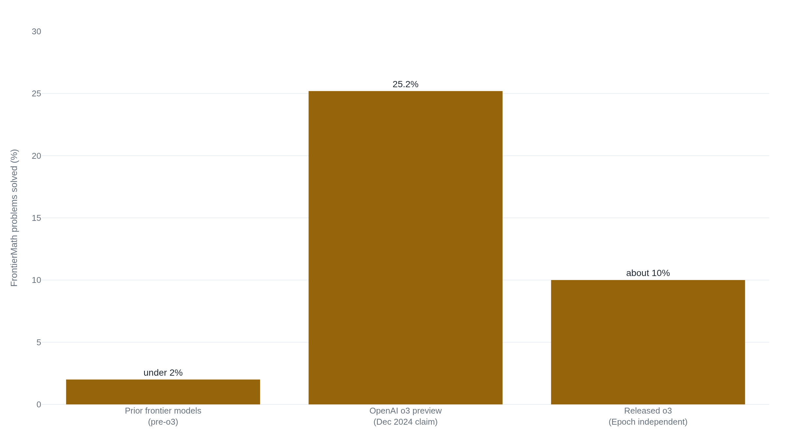

OpenAI funded FrontierMath and had the answers before o3 scored 25% on it
Epoch AI built 350 unpublished problems that a script grades with no human in the loop, and the version of o3 that OpenAI shipped solved about 10% of them when Epoch ran the test itself.
Why this matters
AI labs argue about progress with benchmark scores, and one of the loudest recent numbers is o3 solving about a quarter of FrontierMath, a test of research-level mathematics that had stumped every earlier model. The score is real and the problems are hard. It is also the number a lab reached for to say its model can do frontier math, and the way that number was produced and announced is a clean example of how a carefully built measurement can still mislead. By the end you will know how FrontierMath turns research mathematics into a score a program can grade, and why the headline 25% came from a compute setting rather than the model anyone could run. You will also see why it matters that OpenAI paid for the test and could read most of its answers before the number went out.
- 01
- Change which SWE-bench tasks are counted and GPT-4o's score doubles: a sibling case where how a benchmark is built quietly moves its number, through the tasks counted rather than the funder.
- 02
- The lab that ships an MMLU score rarely says how it was measured: the other way a score loses its meaning, when the measurement protocol is left off the label.
The number, and where it comes from
On December 20, 2024, during a livestream, OpenAI announced that its o3 model solved 25.2% of a math test called FrontierMath.1 The best any earlier model had managed was under 2%.2 On a test whose problems take professional mathematicians hours or days, a jump from 2 to 25 reads as a plain fact about the model, the way "scored 90 on the driving test" reads as a fact about the driver.
FrontierMath is built by Epoch AI, a research group that measures AI progress.2 Every part of the test is designed so the score means something. The problems are new and unpublished, they are written by professional mathematicians, and each one has a single answer a computer can check on its own.3 The 25 comes out of that design. What the announcement left out is who paid for the design and who could read the answers.
Why no person grades a FrontierMath answer
A test is only useful as a comparison if the same answer earns the same score every time, whoever is checking. FrontierMath reaches that by giving every problem one definite answer a program can verify. An answer is "a large integer, a symbolic real, or a tuple of such objects that can be checked computationally," and a verification script marks a submission correct by matching it against the known solution.34 No human reads the model's working and decides whether it deserves credit. That removes the grader's judgment, and with it the arguments about partial credit that make many claims about what a model can do soft at the edges.
The problems are also built to be guessproof. Epoch requires that "random attempts or trivial brute-force approaches have a negligible chance of success," so answers are large or structured enough that a lucky guess almost never lands.3 Because the problems are new and never published, a model cannot have seen them during training, which is the usual way a high score turns out to be memory rather than reasoning.2 The 350 problems are sorted into tiers, from ones resembling hard olympiad and advanced-undergraduate exercises up to problems a PhD student would recognize as early research, with a top tier meant to go well beyond the rest.3
These are extremely challenging. I think that in the near term basically the only way to solve them, short of having a real domain expert in the area, is by a combination of a semi-expert like a graduate student in a related field, maybe paired with some combination of a modern AI and lots of other algebra packages.4 Terence Tao, on FrontierMath
The difficulty is not a sales pitch. When Epoch ran six leading models before o3, including GPT-4o, Claude 3.5 Sonnet, and Gemini 1.5 Pro, none cleared 2%.4 So the test is real, the grading is automatic and fair, and o3's number was a genuine leap. The question is what kind of number it was.
The 25 was a setting, not the model you can run
Here the caveat rides with the number. The 25.2% came from an o3 configuration OpenAI ran at high test-time compute, the amount of computation a model is allowed to spend thinking about each problem. It was a preview, not the product. When Epoch later tested the o3 that OpenAI actually released, it scored about 10% on FrontierMath, well under half the headline.5 The ARC Prize Foundation, which had tested the preview, said the released o3 "is a different model tuned for chat/product use" and runs at smaller compute settings.5
Neither number is fake. They measure different things. The 25.2% is what a high-compute preview did on the test in December, and about 10% is what the shipped model did when someone outside OpenAI ran it in April.5 The headline traveled far faster than the correction, and it traveled without the one figure needed to size it: how much compute bought the 25.

The funder could see the problems
Epoch AI did not build FrontierMath on its own and then test OpenAI on it. OpenAI commissioned it. In Epoch's own words, "OpenAI commissioned Epoch AI to produce 300 advanced math problems for AI evaluation," and "OpenAI retains ownership of these questions and has access to the problems and solutions, with the exception of a holdout set."6
Three facts set the independence problem. OpenAI paid for the test. OpenAI could read most of its problems and their answers. And the 50-problem hold-out set that OpenAI could not fully see was still being finalized when the 25 was announced.6 None of this was disclosed on December 20. The mathematicians who wrote the problems were not told: reporting by TechCrunch found six major contributors who said they were unaware OpenAI would have access, and that most would not have taken part had they known.7 Epoch's associate director later said the group "should have negotiated harder for the ability to be transparent to the benchmark contributors."7
The disclosure came late and in pieces. Epoch added an acknowledgment of OpenAI's support to its paper only after the paper's fifth revision, and the contributors' non-disclosure agreements had covered the problems themselves, not the funding relationship.8
What an outside benchmark is for
A benchmark exists to be a check a lab cannot mark for itself. When a company reports its own internal number, a reader has to trust the company. An external benchmark replaces that trust with something firmer: a test the company did not write, cannot see in advance, and does not score. That independence is the reason an outside number is worth more than a press release.
Funding and access do not prove that o3 cheated. Epoch says OpenAI agreed not to train on the problems, and the hold-out set exists so Epoch can check models against questions the lab never saw.6 There is no public evidence that o3 was trained on FrontierMath. Put at its strongest, Epoch's position is that the problems are legitimate, the grading is sound, and the funding does not by itself make the score false. All of that can be true at once.
It still does not return what the undisclosed relationship took. Once the funder could read most of the answers, an outsider can no longer tell, from the number alone, how much of the 25 is fresh reasoning and how much is contact with the test. The score stops being an independent check and falls back to being OpenAI's report about a test OpenAI paid for, which is the thing an outside benchmark was supposed to improve on. The problems did not get weaker. The disclosure did.
The takeaway
FrontierMath is a real achievement of test design: hundreds of fresh, hard problems that a script can grade without trusting anyone's opinion. That makes the 25.2% a real result about a real capability, at one undisclosed compute setting, from a preview rather than the model you can use. What the number cannot be is an independent check on OpenAI, because OpenAI paid for the test and could read most of its problems and answers, and none of that was stated when the 25 was announced. An outside benchmark is worth more than a lab's own claim only for as long as it stays outside. So when you next meet a headline benchmark score, the useful question is not only how hard the test is, but who built it, who paid for it, and who could see it before the number went out.
- 01
- Epoch AI: Clarifying the creation and use of the FrontierMath benchmark: Epoch's own account of the funding, the data access, and the hold-out set.
- 02
- TechCrunch: o3 scores lower than the company initially implied: the independent re-test that put the released model near 10%.
Sources
- OpenAI · o3-mini (OpenAI's reporting of FrontierMath results)
- Epoch AI et al. · FrontierMath: A Benchmark for Evaluating Advanced Mathematical Reasoning in AI (arXiv:2411.04872)
- Epoch AI · FrontierMath, about the benchmark (Tiers 1-4)
- Epoch AI · FrontierMath, the benchmark
- TechCrunch · OpenAI's o3 scores lower on a benchmark than the company initially implied (Kyle Wiggers, Apr 20, 2025)
- Epoch AI · Clarifying the creation and use of the FrontierMath benchmark (Jan 23, 2025)
- TechCrunch · AI benchmarking organization criticized for waiting to disclose funding from OpenAI (Kyle Wiggers, Jan 19, 2025)
- The Decoder · OpenAI quietly funded independent math benchmark before setting record with o3 (Matthias Bastian, Jan 19, 2025)